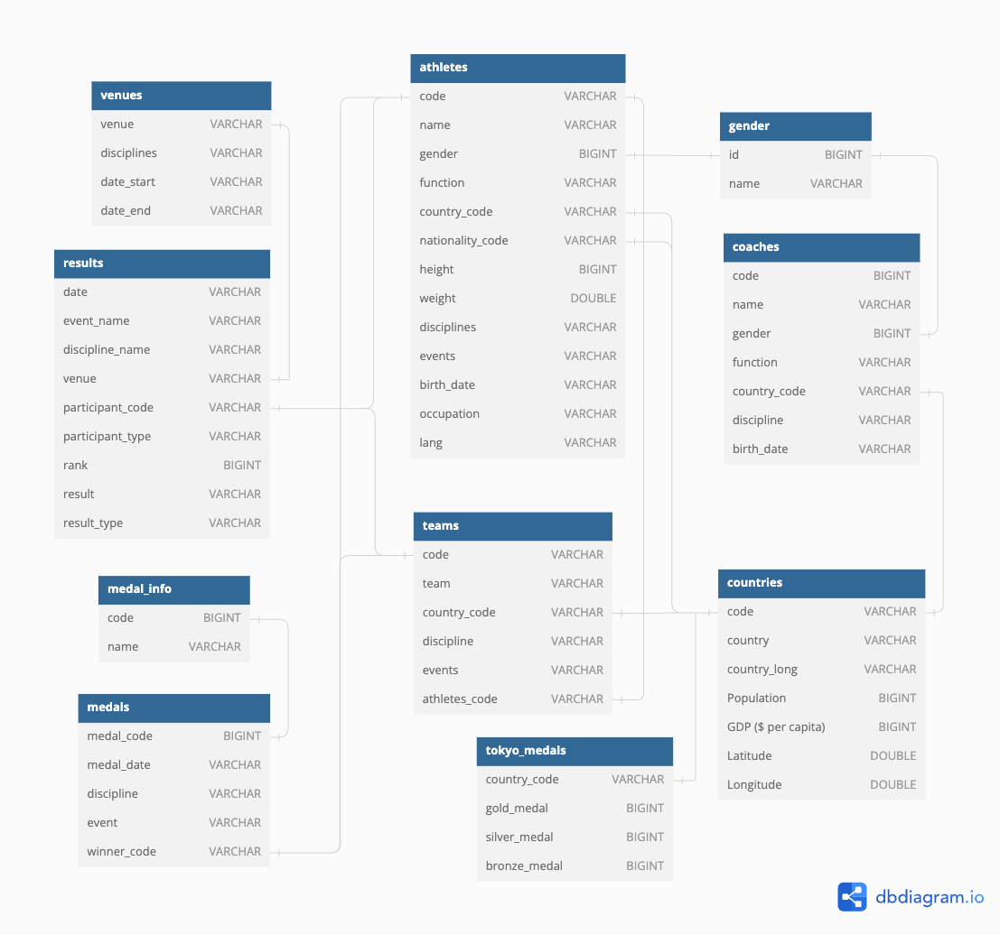

作业 #1 - SQL
概述
第一个作业是构建一组 SQL 查询来分析将提供给您的数据集。为此，您将研究巴黎奥运会数据。本次作业是一次很好的机会来：(1) 学习基本和某些高级 SQL 特性，(2) 熟悉使用两个功能完备的数据库管理系统——SQLite 和 DuckDB，它们在未来可能对您可能有所帮助。
这是一个个人项目，需要独立完成（即不分组）。
- 发布日期： Aug 28, 2024
- 截止日期： Sep 08, 2024 @ 11:59pm
规格说明
本次作业共包含 6 道题目，满分 100 分。每道题都需要构建一个 SQL 查询来获取所需数据。每道题的答案应只包含一条语句。对于所有题目，您可以自由选择使用 SQLite 或 DuckDB 来解答。完成这些题目大约需要 4-6 小时。
占位文件夹
创建提交用的占位文件夹，并为每道题创建空的 SQL 文件：
$ mkdir placeholder
$ cd placeholder
$ touch q1_sample.$DBMS.sql \
q2_successful_coaches.$DBMS.sql \
q3_Judo_athlete_medals.$DBMS.sql \
q4_Athletics_venue_athletes.$DBMS.sql \
q5_top5_rank_country_per_day.$DBMS.sql \
q6_big_progress_country_female_teams.$DBMS.sql
$DBMS = duckdb 或 sqlite，取决于您回答该问题时使用的数据库管理系统
填写完查询后，您可以运行以下命令来压缩文件夹：
$ zip -j submission.zip placeholder/*.sql
-j 参数可以让您将所有 SQL 查询压缩到 zip 文件中而不包含路径信息。如果不这样做，评分脚本将无法正常工作。
说明
-
下载数据库转储文件：
$ wget https://15445.courses.cs.cmu.edu/fall2024/files/olympics-cmudb2024.db.gz
检查其 MD5 校验和以确保您已正确下载文件：$ md5sum olympics-cmudb2024.db.gz 23836c35e58bd31c34f6b7edb26b5fe2 olympics-cmudb2024.db.gz
-
在 shell 中运行以下命令解压提供的数据库转储文件。请注意，解压后数据库文件应为 4.7MB。
$ gunzip olympics-cmudb2024.db.gz
数据集与原始数据集略有不同，因此请使用我们的数据集来完成本次作业。
然后按照以下说明安装 SQLite 和 DuckDB。
SQLite
您首先需要在开发机器上安装 SQLite。
请确保您使用的 SQLite 版本至少为 3.25！较旧的版本（2019 年之前发布的版本）将 不支持完成本作业所需的 SQL 特性。
然后按照以下说明加载数据集：
-
通过遵循本教程检查
sqlite3是否正常工作。 -
在 SQLite 终端运行
.tables命令检查数据库内容。您应该看到 10 张表，输出应如下所示：$ sqlite3 olympics-cmudb2024.db SQLite version 3.40.1 2022-12-28 14:03:47 Enter ".help" for usage hints. sqlite> .tables athletes countries medal_info results tokyo_medals coaches gender medals teams venues
-
运行一个简单的查询以确保数据集未损坏：
sqlite> select count(*) from athletes; 11110
DuckDB
请按照说明安装 DuckDB 1.0.0 版本的命令行环境。
-
启动 DuckDB 时可以直接加载数据集：
-
您可以在 DuckDB 终端运行
.tables命令检查数据库内容。您应该看到 10 张表。输出应如下所示：D .tables athletes countries medal_info results tokyo_medals coaches gender medals teams venues
$ duckdb olympics-cmudb2024.db v1.0.0 1f98600c2c Enter ".help" for usage hints. D select count(*) from results; ┌──────────────┐ │ count_star() │ │ int64 │ ├──────────────┤ │ 21316 │ └──────────────┘
检查模式
下图展示了这些表的模式：

注意：所有discipline 和 discipline_name 字段也是相互关联的。为了保持图表清晰，这些关联未在图中显示。
熟悉表的模式（结构）（它们包含哪些属性，主键和外键是什么）。在 sqlite3 终端对每张表运行 .schema $TABLE_NAME 命令。输出应如下面的示例所示。
athletes
sqlite> .schema athletes CREATE TABLE athletes(code VARCHAR, "name" VARCHAR, gender BIGINT, "function" VARCHAR, country_code VARCHAR, nationality_code VARCHAR, height BIGINT, weight DOUBLE, disciplines VARCHAR, events VARCHAR, birth_date VARCHAR, occupation VARCHAR, lang VARCHAR); CREATE INDEX ix_athletes_code ON athletes(code);
包含运动员的详细信息。例如，这是表中的一行数据：
1532872|ALEKSANYAN Artur|0|Athlete|ARM|ARM|0|0.0|['Wrestling']|["Men's Greco-Roman 97kg"]|1991-10-21|Athlete|Armenian, English, Russian
coaches
sqlite> .schema coaches CREATE TABLE coaches(code BIGINT, "name" VARCHAR, gender BIGINT, "function" VARCHAR, country_code VARCHAR, discipline VARCHAR, birth_date VARCHAR); CREATE INDEX ix_coaches_code ON coaches(code);
包含教练的详细信息。例如，这是表中的一行数据：
1533246|PEDRERO Ofelia|1|Coach|MEX|Artistic Swimming|1988-03-28
countries
sqlite> .schema countries CREATE TABLE countries(code VARCHAR, country VARCHAR, country_long VARCHAR, Population BIGINT, "GDP ($ per capita)" BIGINT, Latitude DOUBLE, Longitude DOUBLE); CREATE INDEX ix_countries_code ON countries(code);
包含国家的详细信息。例如，这是表中的一行数据：
BAR|Barbados|Barbados|279912|15700|13.193887|-59.543198
gender
sqlite> .schema gender CREATE TABLE gender(id BIGINT PRIMARY KEY, "name" VARCHAR);
包含性别信息。例如，这是表中的一行数据：
0|Male
medal_info
sqlite> .schema medal_info CREATE TABLE medal_info(code BIGINT PRIMARY KEY, "name" VARCHAR);
包含奖牌信息。例如，这是表中的一行数据：
1|Gold Medal
medals
sqlite> .schema medals CREATE TABLE medals(medal_code BIGINT, medal_date VARCHAR, discipline VARCHAR, "event" VARCHAR, winner_code VARCHAR); CREATE INDEX ix_medals_code ON medals(medal_code); CREATE INDEX ix_medals_winner_code ON medals(winner_code);
包含在巴黎奥运会上获得的奖牌详情，包括获奖者的代码、奖球的运动项目。注意 winner_code 可以是运动员或团队的代码。另外注意每枚奖牌在本表中只有一条记录，这意味着对于一个团队，不会为每个团队成员分别记录，而是整个团队只有一条记录。例如，这是表中的一行数据：
1|2024-07-27|Cycling Road|Men's Individual Time Trial|1903136
results
sqlite> .schema results CREATE TABLE results(date VARCHAR, event_name VARCHAR, discipline_name VARCHAR, venue VARCHAR, participant_code VARCHAR, participant_type VARCHAR, rank BIGINT, result VARCHAR, result_type VARCHAR);
包含巴黎奥运会每项比赛的结果。注意 participant_code 可以是运动员或团队的代码。另外注意每个排名结果在本表中只有一条记录，这意味着对于一个团队，不会为每个团队成员分别记录，而是整个团队只有一条记录。例如，这是表中的一行数据：
2024-08-09|Men's 10km|Marathon Swimming|Pont Alexandre III|1909030|Person|1|1:50:52.7|TIME
teams
sqlite> .schema teams CREATE TABLE teams(code VARCHAR, team VARCHAR, country_code VARCHAR, discipline VARCHAR, events VARCHAR, athletes_code VARCHAR); CREATE INDEX ix_teams_athletes_code ON teams(athletes_code); CREATE INDEX ix_teams_code ON teams(code);
包含巴黎奥运会团队的详细信息。例如，这是表中的一行数据：
ARCMTEAM3---CHN01|People's Republic of China|CHN|Archery|Men's Team|1913366
tokyo_medals
sqlite> .schema tokyo_medals CREATE TABLE tokyo_medals(country_code VARCHAR, gold_medal BIGINT, silver_medal BIGINT, bronze_medal BIGINT); CREATE INDEX ix_tokyo_medals_country_code ON tokyo_medals(country_code);
包含参加东京奥运会的各国的奖牌数据。例如，这是表中的一行数据：
USA|39|41|33
venues
sqlite> .schema venues CREATE TABLE venues(venue VARCHAR, disciplines VARCHAR, date_start VARCHAR, date_end VARCHAR); CREATE INDEX ix_venues_code ON venues(venue);
包含场馆的详细信息。例如，这是表中的一行数据：
Aquatics Centre|['Artistic Swimming', 'Diving', 'Water Polo']|2024-07-27 09:00:00|2024-08-10 20:00:00
重要说明
请注意以下细节：（虽然有些要点已经提到过，但我们在此再次总结，以防您遗漏。）
-
medals表中的winner_code和result表中的participant_code可以是运动员或团队的代码。 -
在
medals/result表中，每枚奖牌/排名结果只有一条记录，这意味着如果winner_code/participant_code是一个团队，不会为每个团队成员分别记录，而是整个团队只有一条记录。这也意味着即使两条记录完全相同，它们仍然代表不同的奖牌或排名结果。（实际上在原始数据集中，这些”相同”的记录有不同的时间戳，为简单起见我们将其排除了。） -
假设如果一个团队参加比赛，则
所有团队成员都在参赛。
构建 SQL 查询
现在开始构建 SQL 查询并将它们放入占位文件中。您可以先使用 SQLite。
Q1 [0 分]
此查询的目的是确保您的输出格式与我们的自动评分脚本的输出格式完全匹配。
文件： q1_sample
详情： 按字母顺序列出所有奖牌类型。
答案：以下是正确的 SQL 查询和预期输出：
sqlite> select distinct(name) from medal_info order by name; Bronze Medal Gold Medal Silver Medal
您应该将此 SQL 查询放入提交目录（placeholder）中的相应文件（q1_sample.$DBMS.sql）中。
Q2 [20 分]
找出所有至少赢得过至少一枚奖牌的成功教练。按奖牌数量降序排列，然后按姓名字母顺序排列。
文件： q2_successful_coaches
详情：如果奖牌与教练的国家和运动项目相同，则该奖牌归属于该教练，不考虑性别或具体赛事。可以考虑使用一枚奖牌的 winner_code 来确定其所属国家。
您的输出应如下所示：
COACH_NAME|MEDAL_NUMBER
您的第一行应如下所示：
BRECKENRIDGE Grant|9
Q3 [20 分]
找出所有参加柔道（Judo）项目的运动员，并列出他们获得的奖牌数量。首先按奖牌数量降序排列，然后按姓名字母顺序排列。
文件： q3_Judo_athlete_medals
详情：统计的奖牌不限于柔道项目，也包括作为团队成员获得的奖牌。如果运动员未出现在 athletes 表中，请忽略该运动员。假设如果一个团队参加比赛，则所有团队成员都在参赛。
您的输出应如下所示：
ATHLETE_NAME|MEDAL_NUMBER
您的第一行应如下所示：
ABE Hifumi|2
Q4 [20 分]
对于所有举办过田径（Athletics）项目比赛的场馆，列出所有在这些场馆比赛过的运动员，并按其国籍国与其代表国之间的距离降序排列，然后按姓名字母顺序排列。
文件： q4_Athletics_venue_athletes
详情：运动员可以参加任何项目，可以以团队成员或个人身份在这些场馆比赛。两个国家之间的距离计算为它们纬度和纬度之差的平方和加上经度和经度之差的平方和的平方根。只输出具有有效信息的运动员。（即运动员出现在 athletes 表中，且两个国家的纬度和经度均非空。）假设如果一个团队参加比赛，则所有团队成员都在参赛。
您的输出应如下所示：
ATHLETE_NAME|REPRESENTED_COUNTRY_CODE|NATIONALITY_COUNTRY_CODE
您的第一行应如下所示：
GREEN Joseph|GUM|USA
Q5 [20 分]
对于每一天，找出当天在前 5 名（含）中出现次数最多的国家。对于这些国家，还需列出其人口排名和 GDP 排名。按日期升序排列输出。
文件： q5_top5_rank_country_per_day
提示：使用 result 表，并使用 participant_code 获取对应的国家。如果无法获取 result 表中某条记录的国家信息，请忽略该记录。
详情：在计算出现次数时，只考虑 results 表中 rank 非空的记录。排除所有 rank 值均为空的日期。如果出现次数相同，选择按字母顺序排在最前面的国家。保持日期的原始格式。另外，在计算出现次数时不要从 results 表中去重。（参见重要说明部分）。
您的输出应如下所示：
DATE|COUNTRY_CODE|TOP5_APPEARANCES|GDP_RANK|POPULATION_RANK
您的第一行应如下所示：
2024-07-25|KOR|7|38|22
Q6 [20 分]
列出与东京奥运会相比，金牌数量增长最多的五个国家。对于这五个国家，列出它们所有的女性团队。首先按金牌增长数量降序排列，然后按国家代码字母顺序排列，最后按团队代码字母顺序排列。
文件： q6_big_progress_country_female_teams
详情：在计算全女性团队时，如果 teams 表中某条记录的 athletes_code 在 athletes 表中找不到，请忽略该记录，如同它不存在一样。
提示：您可能会发现 DuckDB 中的Lateral Joins很有用：先找出进步最大的 5 个国家，然后使用 lateral join 找出它们的全女性团队。
您的输出应如下所示：
COUNTRY_CODE|INCREASED_GOLD_MEDAL_NUMBER|TEAM_CODE
您的第一行应如下所示：
KOR|7|ARCWTEAM3---KOR01
评分标准
每份提交将根据 SQL 查询是否从数据库中获取了预期的元组集合来评分。每个 SQL 查询只允许一条语句。请注意，您的 SQL 查询将通过将其输出（即元组集合）与正确输出进行比较来进行自动评分。对于您的查询，输出列的顺序很重要；列名则不重要。
迟交政策
请参见课程大纲中的迟交政策。
提交
我们使用 Gradescope 的自动评分器进行评分，以便为您提供即时反馈。完成作业后，您可以将压缩文件夹 submission.zip（仅一个文件）提交到 Gradescope：
重要提示：使用在 Piazza 上公布的 Gradescope 课程代码。
我们将使用类似于 diff 的函数来比较输出文件。您可以随时多次提交答案。
协作政策
- 每位学生必须独立完成本次作业。
- 学生可以与他人讨论项目的高层次细节。
- 学生不允许在与其他学生的小组会议后复制白板上的内容。
- 学生不允许复制其他同学的答案。
警告：本项目的所有代码必须是您自己的。您不得从其他学生或网上找到的其他来源复制源代码。抄袭行为绝不被容忍。更多信息请参见 CMU 的学术诚信政策。
参考数据集
- Petro. (2024). Paris 2024 Olympic Summer Games. Retrieved August 21, 2024 from https://www.kaggle.com/datasets/piterfm/paris-2024-olympic-summer-games.
- Arjun Prasad Sarkhel. (2021). 2021 Olympics in Tokyo. Retrieved August 21, 2024 from https://www.kaggle.com/datasets/arjunprasadsarkhel/2021-olympics-in-tokyo.
- Fernando Lasso. (2018). Countries of the World. Retrieved August 21, 2024 from https://www.kaggle.com/datasets/fernandol/countries-of-the-world.
- bohnacker. (2022). Country Longitude Latitude. Retrieved August 21, 2024 from https://www.kaggle.com/datasets/bohnacker/country-longitude-latitude.